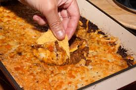

Cowboy Corn Casserole

Description
This cowboy corn casserole is a made with corn, crispy bacon, cream cheese, and Cheddar. A tasty, cheesy side
dish for the whole family.
Ingredients
- 4 ounces cream cheese, softened
- 3/4 cup whole milk
- 1/4 cup all purpose flour
- 2 cloves garlic, minced
- 1 teaspoon paprika
- 1/4 teaspoon salt
- /4 teaspoon freshly ground black pepper
- 2 (10-ounce) packages frozen whole kernel corn
-
10 slices bacon, crisp cooked and crumbled
-
2 cups shredded Cheddar cheese, divided
-
2 tablespoons chopped fresh chives, for garnish
Steps
- Gather all ingredients. Preheat the oven to 350 degrees F (175 degrees C).
- Whisk together cream cheese, milk, flour, garlic, paprika, salt and pepper in a large bowl until well
combined. Stir in corn, bacon and 1 1/2 cups of the cheese. Transfer to a 2-quart baking dish. Sprinkle with
remaining 1/2 cup cheese.
- Bake until cheese is melted and edges are golden brown, 40 to 45 minutes.
- Let stand for 5 minutes before serving. Garnish with chopped chives.
Home